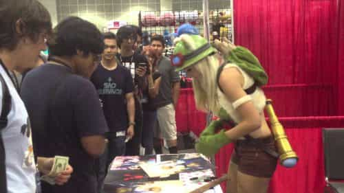
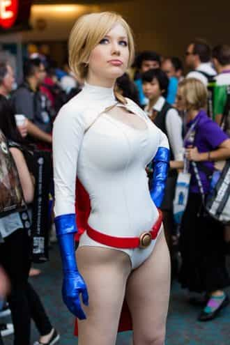
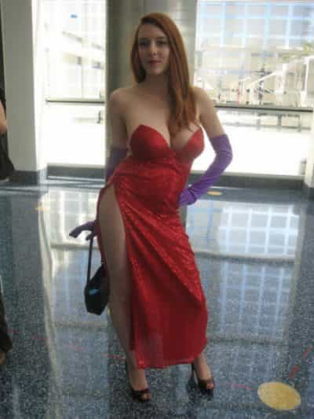

Jared is a middle-aged guy full of old-man wisdom. He's best described as a gentlemen scholar and a man among men. You can read his writing at his site: Legends of Men


What is every modern, cosmopolitan woman’s dream job? You might think something like Princess but you’d be wrong. That isn’t a job so much as it is a title and birthright and unattainable. Women want that too, just like men would also like to be born into royalty, but it isn’t their dream job.
The dream job of modern women is cosplay model. If you’ve never been to any kind of nerd convention, you wouldn’t have seen any cosplay models in person. Rest assured though, women know about cosplay and they love it for the following reasons.

As Roosh wrote here, modern women have replaced genuine connections with men with the attention they get from endless hordes of beta male orbiters, especially online. Some of these women have hundreds of thousands of Facebook fans and Instagram followers. The real attention high they get comes from going to conventions though.
When cosplay models go to these nerd conventions they get just as much attention in person, thus making the high they receive even greater. Keep in mind, these women have no sexual interest in the guys who buy their photographs or timidly ask to pose in a selfie with them. These women will likely go back to their regular lives and bang whatever Chad tickles their fancy that day. All they want from the guys at these conventions is endless amounts of male attention.
But they’ll gladly take money too.

Some of these cosplay models make very good money. Some even make over six figures a year. They make their money in a few ways. They get paid to go to nerd conventions and take selfies with beta males to promote whatever video game the nerds will waste their lives playing. They also go to those same conventions and sell prints of photographs of them in a costume. They can easily sell hundreds of prints for $20 or more a day at these conventions, all while getting paid to be there and promote something else.
They get travel stipends. They get paid to use or promote products even outside the conventions. They get paid to model outside of the conventions as well. I don’t follow any of these women, but I wouldn’t be surprised if they are monetizing their Instagrams, Kickstarters, Patreons, and only-fans accounts to great effect as well.
Talk about smoke and mirrors, cosplay models are able to make themselves look like 9s or 10s when they are only 6s or 7s. They are able to do this in a few ways. The first is by choosing a fictional character that is already hot and dressing up as them. When you see the model dressed as the character your mind already has an association with the character and how hot she is.

Jessica Rabbit was a hot character; 10/10. When a woman dresses like Jessica Rabbit your immediate impulse is that she is a 10/10 as well, especially if she has big boobs. But look past the boobs and you begin to see a little bit of a gut hanging out.
By my standards, that woman is still attractive, but she gives the illusion of being far more attractive by manipulating your memories of fictional women. By now, you may have seen videos of not very attractive women doing their make-up to look much better. Their skills are impressive, artistic one could argue. Some of these women, especially some of the top-paid professionals, are very attractive even naturally, but that’s not the appeal of the being a cosplay model. Even the very attractive women aren’t very noteworthy for their natural beauty.
Professional cosplay models may still be attractive but they are punching way above their weight. They do that by using these makeup and costume manipulations to get the attention 9s and 10s get despite their less attractive day-to-day appearance. That’s the appeal of cosplay.
Add all these up and cosplay models are essentially being treated like celebrities. They dress up like an anime or video game character and get paid to do a photoshoot. Then some video game marketing agency flies them out to San Diego (or wherever) and puts them up in an expensive hotel room. The next day they don their costumes and get paid to take selfies with nerds at a convention. They sell their prints to make money. Next to their booth is Robert Downey Jr. (or whoever is popular) promoting another Marvel movie. The cosplay model is getting just as much attention as Iron Man.
Cosplay models get to feel like celebrities, and in many ways, they are being treated like celebrities.
Modern women would love to be cosplay models if they could. Most probably can’t do their makeup well enough. Already though women get as much attention as they possibly can from Instagram and tinder. They’d get even more without having to make themselves genuinely more attractive if they were cosplay models. Best of all they could take some nerd’s money for posing for a picture, thus fulfilling their need for attention and money.
While the attention, money, and celebrity treatment certainly sounds appealing, and it is, it is also what damages people’s ability to truly connect with each other. Just like no man wants (or should want) his girlfriend or wife dancing in a strip club no man wants his girlfriend or wife dressing provocatively to get attention from other men. Even if those men are beta males at a nerd convention. The problem comes when women don’t understand this and instead decide that their freedom to get male attention unhindered is more important than connecting with a man who may love them.
It’s the challenge every man in the dating market struggles to overcome and why so many women fail to deeply connect with a man who would love them.
For more about the roles of men and women in the media, literature, history, and our modern culture check out Legends of Men.